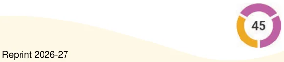

- •We have been reading and evaluating simple expressions for quite
some time now. Here we started by revising the meaning of some simple expressions and their values.
- •We learnt how to compare certain expressions through reasoning
instead of bluntly evaluating them.
- •To help read and evaluate complex expressions without confusion,
we use terms and brackets.
- •When an expression is written as a sum of terms, changing the order
of the terms or grouping the terms does not change the value of the expression. This is because the “commutative property of addition” and the “associative property of addition”, respectively.
- •To evaluate expressions within brackets, we saw that when we
remove brackets preceded by a negative sign, the terms within the bracket change their sign.
- •We also learnt about the “distributive property” - multiplying a
number with an expression inside brackets is equal to the multiplying the number with each term in the bracket.
Expression Engineer!
Using three 3’s along with the four operations (addition, subtraction, multiplication, and division) and brackets as needed we can create several expressions. For example, \((3 + 3)/3 = 2\), \(3 + 3 - 3 = 3\), \(3 \times\)
\(3 + 3 = 12\), and so on.
Using four 4’s, create expressions to get all values from 1 to 20. Using the numbers 1, 2, 3, 4, and 5 exactly once in any order get as many values as possible between \(- 10\) and +10. Using the numbers 0 to 9 exactly once in any order, make an expression with a value 100. What other similar interesting questions can you ask?
